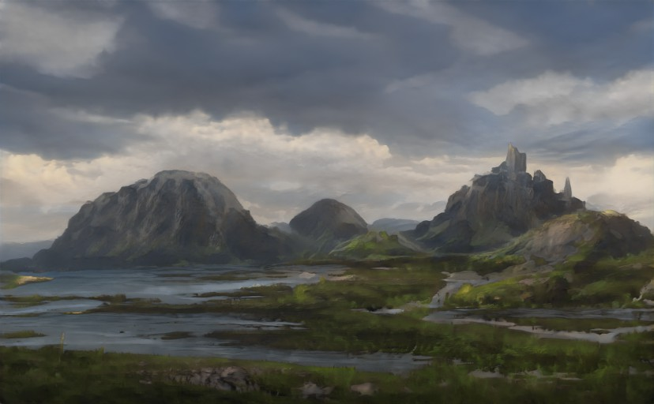
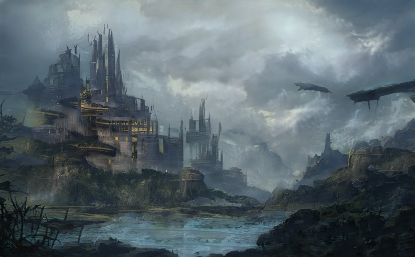

March the 11th
Entry#6: Day at the Library
I spent the day at the castle’s library and read up on the neighbouring empire, the Xul empire.
A race of humanoids who, before the Lords of Xul, were members of a warrior class. A group of warriors were recruited by the first emperor of Xul to protect his realm from the forces of chaos. While the son of the emperor loved his warriors, the daughter of the emperor wanted nothing to do with them. She would be devoured by one of the fiery undead who still plagued her kingdom.
The Xul empire grew as more and more armies joined it, and finally, the armies fought each other in a great battle of epic proportions. The best warriors among them all, able to use supernatural abilities, were selected to defeat the undead warriors in a battle to the death. The warriors of the empire had the best of luck. Though the undead came close to winning, the heroes of the empire were able to overcome them and drive them back into the dark places where they came from.
The newly victorious warriors were given land and freedom, and the soldiers who lost the battle were given the burial rites of heroes. A monument was built in honor of the fallen heroes, the afterlife for those who died as heroes. Those honored in the future are referred to as "Maledictions", those who died as villains are known as "Enemies of Xul", and those who died under mysterious circumstances are known as "The Whistleblowers."
When the Whistleblowers grow old, they sometimes find a way to reincarnate themselves, until finally, one of them stops the Whistleblowers, and breaks the cycle. One of the most notorious Maledictions is called "Mordru the Undying", who first became a Malediction after he died in a battle against the undead warrior Gelenka, and was born again through the power of an ancient device.
The Maledictions, who find their way into human bodies after they have passed on, have no loyalty to other humans, and their "souls" have an unknown hold on them. During World War II, the Maledictions of the Xul Empire organized themselves into a resistance force, using ancient devices in order to turn the tide of the war.
The Xul Empire is where the actual rule of Xul is found, with the various rulers of that realm named after each element of the elemental force of which they are part. Their identities are constantly being challenged by the Maledictions, but with only one Malediction having the true power to defeat them, who would it be? A Xul prince who defected to the resistance and now watches over the city of Cadl, or a talented warrior who aspires to defeat his fellow Malediction? All four Xul princes.
Next Page  